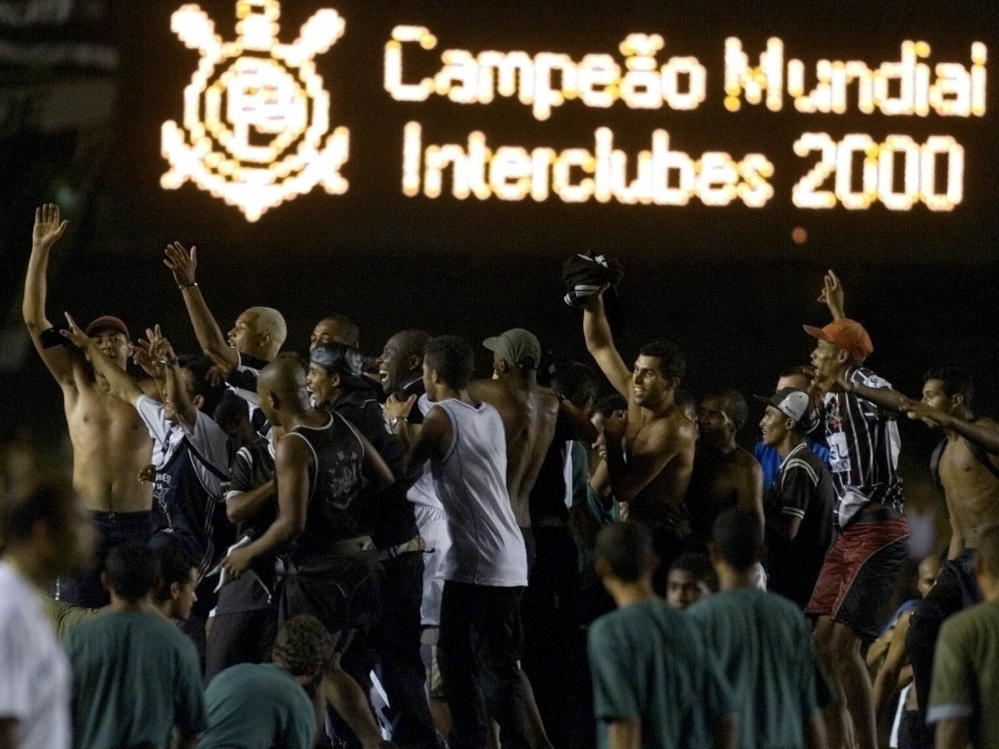

O FIFA Club World Championship 2000 foi o primeiro Mundial de Clubes organizado pela FIFA. O torneio aconteceu no Brasil e reuniu alguns dos melhores clubes do mundo. Representando o país-sede, o Sport Club Corinthians Paulista entrou na competição com muita expectativa e apoio da torcida. Na fase de grupos, o Corinthians teve grandes atuações e conseguiu resultados importantes contra equipes fortes.
O time mostrou um futebol muito organizado e contou com jogadores decisivos como Marcelinho Carioca, Edílson, Rincón e o goleiro Dida. Com boas vitórias e um empate importante, o Corinthians garantiu a classificação para a grande final do torneio.
A decisão foi disputada no estádio do Maracanã contra o CR Vasco da Gama, no dia 14 de janeiro de 2000.
O jogo foi muito equilibrado e terminou empatado em 0 a 0 no tempo normal e também na prorrogação. Assim, o campeão precisou ser decidido na disputa de pênaltis. Nas cobranças, o Corinthians mostrou muita calma e precisão.
O goleiro Dida fez uma defesa decisiva, e o time paulista venceu por 4 a 3 nas penalidades. Com isso, o Corinthians conquistou o primeiro Mundial de Clubes da FIFA da história, diante de mais de 70 mil torcedores no Maracanã, marcando para sempre seu nome na história do futebol mundial.

